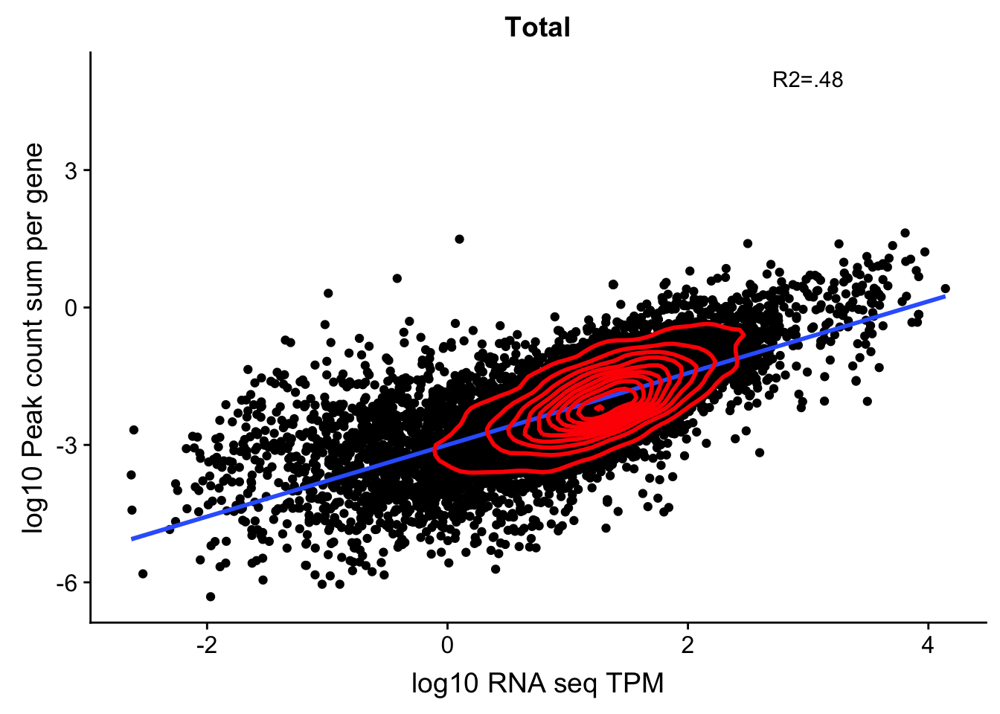
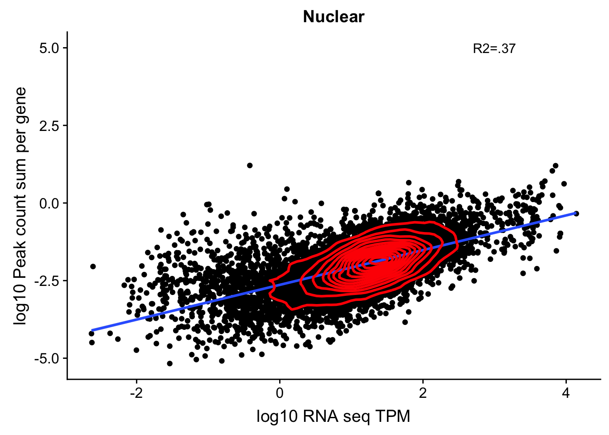

Last updated: 2018-12-12
workflowr checks: (Click a bullet for more information) ✔ R Markdown file: up-to-date
Great! Since the R Markdown file has been committed to the Git repository, you know the exact version of the code that produced these results.
✔ Environment: empty
Great job! The global environment was empty. Objects defined in the global environment can affect the analysis in your R Markdown file in unknown ways. For reproduciblity it’s best to always run the code in an empty environment.
✔ Seed:
set.seed(12345)
The command set.seed(12345) was run prior to running the code in the R Markdown file. Setting a seed ensures that any results that rely on randomness, e.g. subsampling or permutations, are reproducible.
✔ Session information: recorded
Great job! Recording the operating system, R version, and package versions is critical for reproducibility.
✔ Repository version: 0e0840e
wflow_publish or wflow_git_commit). workflowr only checks the R Markdown file, but you know if there are other scripts or data files that it depends on. Below is the status of the Git repository when the results were generated:
Ignored files:
Ignored: .DS_Store
Ignored: .Rhistory
Ignored: .Rproj.user/
Ignored: data/.DS_Store
Ignored: output/.DS_Store
Untracked files:
Untracked: KalistoAbundance18486.txt
Untracked: analysis/DirectionapaQTL.Rmd
Untracked: analysis/ncbiRefSeq_sm.sort.mRNA.bed
Untracked: analysis/snake.config.notes.Rmd
Untracked: analysis/verifyBAM.Rmd
Untracked: code/PeaksToCoverPerReads.py
Untracked: data/18486.genecov.txt
Untracked: data/APApeaksYL.total.inbrain.bed
Untracked: data/ChromHmmOverlap/
Untracked: data/GM12878.chromHMM.bed
Untracked: data/GM12878.chromHMM.txt
Untracked: data/LocusZoom/
Untracked: data/NuclearApaQTLs.txt
Untracked: data/PeakCounts/
Untracked: data/PeaksUsed/
Untracked: data/RNAkalisto/
Untracked: data/TotalApaQTLs.txt
Untracked: data/Totalpeaks_filtered_clean.bed
Untracked: data/UnderstandPeaksQC/
Untracked: data/YL-SP-18486-T-combined-genecov.txt
Untracked: data/YL-SP-18486-T_S9_R1_001-genecov.txt
Untracked: data/apaExamp/
Untracked: data/bedgraph_peaks/
Untracked: data/bin200.5.T.nuccov.bed
Untracked: data/bin200.Anuccov.bed
Untracked: data/bin200.nuccov.bed
Untracked: data/clean_peaks/
Untracked: data/comb_map_stats.csv
Untracked: data/comb_map_stats.xlsx
Untracked: data/comb_map_stats_39ind.csv
Untracked: data/combined_reads_mapped_three_prime_seq.csv
Untracked: data/diff_iso_trans/
Untracked: data/ensemble_to_genename.txt
Untracked: data/example_gene_peakQuant/
Untracked: data/explainProtVar/
Untracked: data/filtered_APApeaks_merged_allchrom_refseqTrans.closest2End.bed
Untracked: data/filtered_APApeaks_merged_allchrom_refseqTrans.closest2End.noties.bed
Untracked: data/first50lines_closest.txt
Untracked: data/gencov.test.csv
Untracked: data/gencov.test.txt
Untracked: data/gencov_zero.test.csv
Untracked: data/gencov_zero.test.txt
Untracked: data/gene_cov/
Untracked: data/joined
Untracked: data/leafcutter/
Untracked: data/merged_combined_YL-SP-threeprimeseq.bg
Untracked: data/mol_overlap/
Untracked: data/mol_pheno/
Untracked: data/nom_QTL/
Untracked: data/nom_QTL_opp/
Untracked: data/nom_QTL_trans/
Untracked: data/nuc6up/
Untracked: data/other_qtls/
Untracked: data/pQTL_otherphen/
Untracked: data/peakPerRefSeqGene/
Untracked: data/perm_QTL/
Untracked: data/perm_QTL_opp/
Untracked: data/perm_QTL_trans/
Untracked: data/perm_QTL_trans_filt/
Untracked: data/reads_mapped_three_prime_seq.csv
Untracked: data/smash.cov.results.bed
Untracked: data/smash.cov.results.csv
Untracked: data/smash.cov.results.txt
Untracked: data/smash_testregion/
Untracked: data/ssFC200.cov.bed
Untracked: data/temp.file1
Untracked: data/temp.file2
Untracked: data/temp.gencov.test.txt
Untracked: data/temp.gencov_zero.test.txt
Untracked: data/threePrimeSeqMetaData.csv
Untracked: output/picard/
Untracked: output/plots/
Untracked: output/qual.fig2.pdf
Unstaged changes:
Modified: analysis/28ind.peak.explore.Rmd
Modified: analysis/QTLsbyPCnum.Rmd
Modified: analysis/apaQTLoverlapGWAS.Rmd
Modified: analysis/cleanupdtseq.internalpriming.Rmd
Modified: analysis/coloc_apaQTLs_protQTLs.Rmd
Modified: analysis/dif.iso.usage.leafcutter.Rmd
Modified: analysis/diff_iso_pipeline.Rmd
Modified: analysis/explainpQTLs.Rmd
Modified: analysis/explore.filters.Rmd
Modified: analysis/flash2mash.Rmd
Modified: analysis/overlapMolQTL.Rmd
Modified: analysis/overlap_qtls.Rmd
Modified: analysis/peakOverlap_oppstrand.Rmd
Modified: analysis/pheno.leaf.comb.Rmd
Modified: analysis/swarmPlots_QTLs.Rmd
Modified: analysis/test.max2.Rmd
Modified: analysis/understandPeaks.Rmd
Modified: code/Snakefile
library(tidyverse)── Attaching packages ───────────────────────────────────────────────────────── tidyverse 1.2.1 ──✔ ggplot2 3.0.0 ✔ purrr 0.2.5
✔ tibble 1.4.2 ✔ dplyr 0.7.6
✔ tidyr 0.8.1 ✔ stringr 1.3.1
✔ readr 1.1.1 ✔ forcats 0.3.0── Conflicts ──────────────────────────────────────────────────────────── tidyverse_conflicts() ──
✖ dplyr::filter() masks stats::filter()
✖ dplyr::lag() masks stats::lag()library(workflowr)This is workflowr version 1.1.1
Run ?workflowr for help getting startedlibrary(cowplot)
Attaching package: 'cowplot'The following object is masked from 'package:ggplot2':
ggsavelibrary(tximport)In looking at correlations and some examples, there is evidence the peak to gene assignment may be a problem. I am going to visualize the peaks in IGV. I will name them by the gene and look at them in the browser.
The peak to gene annotations used in the feature counts to map reads back to the peaks is the following:
* /project2/gilad/briana/threeprimeseq/data/mergedPeaks_comb/filtered_APApeaks_merged_allchrom_refseqTrans.noties_sm.fixed.bed
I need to change this a bit to have the name be the gene rather than the score:
NamePeaksByGene.py
#python
CovnamedPeaks=open("/project2/gilad/briana/threeprimeseq/data/mergedPeaks_comb/filtered_APApeaks_merged_allchrom_refseqTrans.noties_sm.fixed.bed", "r")
GeneNamedPeaks=open("/project2/gilad/briana/threeprimeseq/data/UnderstandPeaksQC/PeaksNamedWithGeneAssignment.bed", "w")
for ln in CovnamedPeaks:
chrom, start, end, num, cov, strand, transcript = ln.split()
gene=transcript.split("-")[1]
GeneNamedPeaks.write("%s\t%s\t%s\t%s\n"%(chrom,start,end,gene))
GeneNamedPeaks.close()
This was made based on the transcript annotation: ncbiRefSeq.mRNA.named.bed
The ends of the transcripts specfically are in:
Ideas for Dilters:
Cant be upstream of the gene, ex: chr2:135,558,075-135,604,343
maybe it cant be in another gene
we should include LINCs
looks like we have a ton of low expressed intergenic peaks that should be filtered before we do the gene annotation
As a first pass I want to filter out the peaks that are outside a gene body. While this may not be perfect it will help alot with the intergenic noise.
I need to overlap the named peaks with /project2/gilad/briana/genome_anotation_data/ncbiRefSeq.mRNA.named.bed and only keep the matches. I can use bedtools intersect.
Rename the peaks according to convention to run an intesect.
RenamePeaks4Intersect.py
#python
CovnamedPeaks=open("/project2/gilad/briana/threeprimeseq/data/mergedPeaks_comb/filtered_APApeaks_merged_allchrom_refseqTrans.noties_sm.fixed.bed", "r")
GeneNamedPeaks=open("/project2/gilad/briana/threeprimeseq/data/UnderstandPeaksQC/filtered_APApeaks_merged_allchrom_refseqTrans.noties_sm.fixed_RENAMED.bed", "w")
for ln in CovnamedPeaks:
chrom, start, end, num, cov, strand, transcript = ln.split()
gene=transcript.split("-")[1]
start=int(start)
end=int(end)
GeneNamedPeaks.write("%s\t%d\t%d\t%s-%s\t%s\t%s\n"%(chrom,start,end,num,gene,cov,strand))
GeneNamedPeaks.close()
Remove CHR from the refseq annpotation:
sed 's/^chr//' /project2/gilad/briana/genome_anotation_data/ncbiRefSeq.mRNA.named.bed > /project2/gilad/briana/genome_anotation_data/ncbiRefSeq.mRNA.named_noCHR.bedFilter4GenicPeaks.sh
#!/bin/bash
#SBATCH --job-name=Filter4GenicPeaks
#SBATCH --account=pi-yangili1
#SBATCH --time=24:00:00
#SBATCH --output=Filter4GenicPeaks.out
#SBATCH --error=Filter4GenicPeaks.err
#SBATCH --partition=broadwl
#SBATCH --mem=12G
#SBATCH --mail-type=END
module load Anaconda3
source activate three-prime-env
bedtools intersect -wa -s -a /project2/gilad/briana/threeprimeseq/data/UnderstandPeaksQC/filtered_APApeaks_merged_allchrom_refseqTrans.noties_sm.fixed_RENAMED.bed -b /project2/gilad/briana/genome_anotation_data/ncbiRefSeq.mRNA.named_noCHR.bed > /project2/gilad/briana/threeprimeseq/data/mergedPeaks_comb_inGeneBody/filtered_APApeaks_merged_allchrom_refseqTrans.noties_sm.fixed_inGeneBodies.bedThis is printing them multiple times.
uniq /project2/gilad/briana/threeprimeseq/data/mergedPeaks_comb_inGeneBody/filtered_APApeaks_merged_allchrom_refseqTrans.noties_sm.fixed_inGeneBodies.bed > /project2/gilad/briana/threeprimeseq/data/mergedPeaks_comb_inGeneBody/filtered_APApeaks_merged_allchrom_refseqTrans.noties_sm.fixed_inGeneBodiesUNIQ.bedNow I need to make this an SAF to run feature counts.
bed2saf_peaksInGenicReg.py
from misc_helper import *
fout = open("/project2/gilad/briana/threeprimeseq/data/mergedPeaks_comb_inGeneBody/filtered_APApeaks_merged_allchrom_refseqTrans.noties_sm.fixed_inGeneBodiesUNIQ.SAF",'w')
fout.write("GeneID\tChr\tStart\tEnd\tStrand\n")
for ln in open("/project2/gilad/briana/threeprimeseq/data/mergedPeaks_comb_inGeneBody/filtered_APApeaks_merged_allchrom_refseqTrans.noties_sm.fixed_inGeneBodiesUNIQ.bed"):
chrom, start, end, name, score, strand = ln.split()
namenum=name.split("-")[0]
name_i=int(namenum)
start_i=int(start)
end_i=int(end)
gene_only=name.split("-")[1]
ID = "peak%d:%s:%d:%d:%s:%s"%(name_i, chrom, start_i, end_i, strand, gene_only)
fout.write("%s\t%s\t%d\t%d\t%s\n"%(ID, chrom, start_i, end_i, strand))
fout.close()Run Feature Counts
PeaksinGenicRegion_fc_TN.sh
#!/bin/bash
#SBATCH --job-name=PeaksinGenicRegion_fc_TN
#SBATCH --account=pi-yangili1
#SBATCH --time=24:00:00
#SBATCH --output=PeaksinGenicRegion_fc_TN.out
#SBATCH --error=PeaksinGenicRegion_fc_TN.err
#SBATCH --partition=broadwl
#SBATCH --mem=12G
#SBATCH --mail-type=END
module load Anaconda3
source activate three-prime-env
featureCounts -O -a /project2/gilad/briana/threeprimeseq/data/mergedPeaks_comb_inGeneBody/filtered_APApeaks_merged_allchrom_refseqTrans.noties_sm.fixed_inGeneBodiesUNIQ.SAF -F SAF -o /project2/gilad/briana/threeprimeseq/data/PeakInGenecRegion_cov/filtered_APApeaks_merged_allchrom_refseqGenes.Transcript_sm_quant_Genic.Total.fc /project2/gilad/briana/threeprimeseq/data/sort/*-T-*-sort.bam -s 2
featureCounts -O -a /project2/gilad/briana/threeprimeseq/data/mergedPeaks_comb_inGeneBody/filtered_APApeaks_merged_allchrom_refseqTrans.noties_sm.fixed_inGeneBodiesUNIQ.SAF -F SAF -o /project2/gilad/briana/threeprimeseq/data/PeakInGenecRegion_cov/filtered_APApeaks_merged_allchrom_refseqGenes.Transcript_sm_quant_Genic.Nuclear.fc /project2/gilad/briana/threeprimeseq/data/sort/*-N-*-sort.bam -s 2
Lastly I will need to fix the headers.
fix_head_fc_genicPeak_tot.py
infile= open("/project2/gilad/briana/threeprimeseq/data/PeakInGenecRegion_cov/filtered_APApeaks_merged_allchrom_refseqGenes.Transcript_sm_quant_Genic.Total.fc", "r")
fout = open("/project2/gilad/briana/threeprimeseq/data/PeakInGenecRegion_cov/filtered_APApeaks_merged_allchrom_refseqGenes.Transcript_sm_quant_Genic.Total_fixed.fc",'w')
for line, i in enumerate(infile):
if line == 1:
i_list=i.split()
libraries=i_list[:6]
for sample in i_list[6:]:
full = sample.split("/")[7]
samp= full.split("-")[2:4]
lim="_"
samp_st=lim.join(samp)
libraries.append(samp_st)
first_line= "\t".join(libraries)
fout.write(first_line + '\n')
else :
fout.write(i)
fout.close()fix_head_fc_genicPeak_nuc.py
infile= open("/project2/gilad/briana/threeprimeseq/data/PeakInGenecRegion_cov/filtered_APApeaks_merged_allchrom_refseqGenes.Transcript_sm_quant_Genic.Nuclear.fc", "r")
fout = open("/project2/gilad/briana/threeprimeseq/data/PeakInGenecRegion_cov/filtered_APApeaks_merged_allchrom_refseqGenes.Transcript_sm_quant_Genic.Nuclear_fixed.fc",'w')
for line, i in enumerate(infile):
if line == 1:
i_list=i.split()
libraries=i_list[:6]
for sample in i_list[6:]:
full = sample.split("/")[7]
samp= full.split("-")[2:4]
lim="_"
samp_st=lim.join(samp)
libraries.append(samp_st)
first_line= "\t".join(libraries)
fout.write(first_line + '\n')
else :
fout.write(i)
fout.close()Pull these into R and look at the correlation between the sum of the peaks by gene and the transcripts counts from RNA seq.
TPM counts from Kalisto
tx2gene=read.table("../data/RNAkalisto/ncbiRefSeq.txn2gene.txt" ,header= F, sep="\t", stringsAsFactors = F)
txi.kallisto.tsv <- tximport("../data/RNAkalisto/abundance.tsv", type = "kallisto", tx2gene = tx2gene,countsFromAbundance="lengthScaledTPM" )Note: importing `abundance.h5` is typically faster than `abundance.tsv`reading in files with read_tsv1
removing duplicated transcript rows from tx2gene
transcripts missing from tx2gene: 99
summarizing abundance
summarizing counts
summarizing lengthIn previous analysis I did not account for gene length. Here I am going to standardize by length because I am taking a sum over a gene body.
Import gene lengths:
geneLengthNames=c("CHR", "start", "end", "gene", "score", "strand")
geneLengths=read.table("../data/UnderstandPeaksQC/refseq.ProteinCoding.bed", header=F, stringsAsFactors = F, col.names = geneLengthNames) %>% mutate(length=end-start) %>% select(gene, length)Look at the correlation with the total:
I am using the sum of the counts in a gene divided by how many million reads mapped. I am also filtering out peaks with less than 10 reads in this individual.
total_Cov_18486=read.table("../data/UnderstandPeaksQC/filtered_APApeaks_merged_allchrom_refseqGenes.Transcript_sm_quant_Genic.Total_fixed.fc", header=T, stringsAsFactors = F)[,1:7] %>% separate(Geneid, into=c("peak", "chr", "start", "end", "strand", "gene"), sep=":") %>% select(gene, X18486_T) %>% filter(X18486_T>0) %>% group_by(gene) %>% summarize(GeneSum=sum(X18486_T)) %>% mutate(GeneSumNorm=GeneSum/10.8) %>% inner_join(geneLengths, by="gene") %>% mutate(GeneSumSt=GeneSum/length)Join the data frames.
TXN_abund=as.data.frame(txi.kallisto.tsv$abundance) %>% rownames_to_column(var="gene")
colnames(TXN_abund)=c("gene", "TPM")
TXN_NormGene=TXN_abund %>% inner_join(total_Cov_18486,by="gene")Remove rows with 0 counts and Plot:
TXN_NormGene=TXN_NormGene %>% filter(TPM>0) %>% filter(GeneSumSt>0)
corr_18486Tot=ggplot(TXN_NormGene, aes(x=log10(TPM), y= log10(GeneSumSt))) + geom_point() + labs(title="Total", x="log10 RNA seq TPM", y="log10 Peak count sum per gene")+ geom_smooth(aes(x=log10(TPM),y=log10(GeneSumSt)),method = "lm") + annotate("text",x=3, y=5,label="R2=.48") +geom_density2d(na.rm = TRUE, size = 1, colour = 'red')
#+ geom_text(aes(label=gene),hjust=0, vjust=0)
corr_18486Tot 
summary(lm(log10(TPM)~log10(GeneSumSt),TXN_NormGene))
Call:
lm(formula = log10(TPM) ~ log10(GeneSumSt), data = TXN_NormGene)
Residuals:
Min 1Q Median 3Q Max
-3.5894 -0.2556 0.0856 0.3676 2.3387
Coefficients:
Estimate Std. Error t value Pr(>|t|)
(Intercept) 2.407969 0.013563 177.5 <2e-16 ***
log10(GeneSumSt) 0.612175 0.005812 105.3 <2e-16 ***
---
Signif. codes: 0 '***' 0.001 '**' 0.01 '*' 0.05 '.' 0.1 ' ' 1
Residual standard error: 0.598 on 12053 degrees of freedom
Multiple R-squared: 0.4793, Adjusted R-squared: 0.4793
F-statistic: 1.11e+04 on 1 and 12053 DF, p-value: < 2.2e-16Try this with nuclear
nuclear_Cov_18486=read.table("../data/UnderstandPeaksQC/filtered_APApeaks_merged_allchrom_refseqGenes.Transcript_sm_quant_Genic.Nuclear_fixed.fc", header=T, stringsAsFactors = F)[,1:7] %>% separate(Geneid, into=c("peak", "chr", "start", "end", "strand", "gene"), sep=":") %>% select(gene, X18486_N) %>% filter(X18486_N>10) %>% group_by(gene) %>% summarize(GeneSum=sum(X18486_N)) %>% mutate(GeneSumNorm=GeneSum/11.4) %>% inner_join(geneLengths, by="gene") %>% mutate(GeneSumSt=GeneSum/length)Join the data frames.
TXN_NormGene_nuc=TXN_abund %>% inner_join(nuclear_Cov_18486,by="gene")Remove rows with 0 counts and Plot:
TXN_NormGene_nuc=TXN_NormGene_nuc %>% filter(TPM>0) %>% filter(GeneSumSt>0)
corr_18486Nuc=ggplot(TXN_NormGene_nuc, aes(x=log10(TPM), y= log10(GeneSumSt))) + geom_point() + labs(title="Nuclear", x="log10 RNA seq TPM", y="log10 Peak count sum per gene")+ geom_smooth(aes(x=log10(TPM),y=log10(GeneSumSt)),method = "lm") + annotate("text",x=3, y=5,label="R2=.37") + geom_density2d(na.rm = TRUE, size = 1, colour = 'red')
#+ geom_text(aes(label=gene),hjust=0, vjust=0)
corr_18486Nuc 
summary(lm(log10(TPM)~log10(GeneSumSt),TXN_NormGene_nuc))
Call:
lm(formula = log10(TPM) ~ log10(GeneSumSt), data = TXN_NormGene_nuc)
Residuals:
Min 1Q Median 3Q Max
-3.7211 -0.2691 0.0733 0.3789 2.5253
Coefficients:
Estimate Std. Error t value Pr(>|t|)
(Intercept) 2.451150 0.017039 143.85 <2e-16 ***
log10(GeneSumSt) 0.654587 0.008008 81.74 <2e-16 ***
---
Signif. codes: 0 '***' 0.001 '**' 0.01 '*' 0.05 '.' 0.1 ' ' 1
Residual standard error: 0.6324 on 11567 degrees of freedom
Multiple R-squared: 0.3661, Adjusted R-squared: 0.3661
F-statistic: 6681 on 1 and 11567 DF, p-value: < 2.2e-16This just said it had to be in a gene body not the specific gene body. This could be a problem still. For example in the SSPO locus chr7:149,521,993-149,543,749. Here the peaks are closer to the end of the SSPO but are in the gene body of the next gene downstream.
Histones dont have a polyA tail- the HIST1H4C peak is most likely misprimming (chr6:26,102,306-26,110,443)
Filter out overlapping genes:
Count overlaps in origial file:
bedtools merge -i IN.bed -c 1 -o count > counted
countGeneOverlap.sh
#!/bin/bash
#SBATCH --job-name=countGeneOverlap
#SBATCH --account=pi-yangili1
#SBATCH --time=24:00:00
#SBATCH --output=countGeneOverlap.out
#SBATCH --error=countGeneOverlap.err
#SBATCH --partition=broadwl
#SBATCH --mem=12G
#SBATCH --mail-type=END
module load Anaconda3
source activate three-prime-env
bedtools merge -i /project2/gilad/briana/genome_anotation_data/refseq.ProteinCoding.noCHR.bed -c 1 -o count > /project2/gilad/briana/genome_anotation_data/refseq.ProteinCoding.countGeneOverlap.bed Filter out these rows: awk '/\t1$/{print}' counted > filtered
awk '/\t1$/{print}' /project2/gilad/briana/genome_anotation_data/refseq.ProteinCoding.countGeneOverlap.bed > /project2/gilad/briana/genome_anotation_data/refseq.ProteinCoding.countGeneOverlap.filtered.bedIntersect with original input to only keep the ones in both sets.
bedtools intersect -a IN.bed -b filtered -wa > OUT.bed
findGeneswithoutOverlap.sh
#!/bin/bash
#SBATCH --job-name=findGeneswithoutOverlap.sh
#SBATCH --account=pi-yangili1
#SBATCH --time=24:00:00
#SBATCH --output=findGeneswithoutOverlap.out
#SBATCH --error=findGeneswithoutOverlap.err
#SBATCH --partition=broadwl
#SBATCH --mem=12G
#SBATCH --mail-type=END
module load Anaconda3
source activate three-prime-env
bedtools intersect -a /project2/gilad/briana/genome_anotation_data/refseq.ProteinCoding.noCHR.bed -b /project2/gilad/briana/genome_anotation_data/refseq.ProteinCoding.countGeneOverlap.filtered.bed -wa > /project2/gilad/briana/genome_anotation_data/refseq.ProteinCoding.NonOverlapGenes.bed
Finally overlap with the mRNA file to only keep the transcripts in these genes. This may be easiest in python /project2/gilad/briana/genome_anotation_data/ncbiRefSeq.mRNA.named_noCHR.bed
subsetmRNAforNonOverlapGenes.py
geneFile=open("/project2/gilad/briana/genome_anotation_data/refseq.ProteinCoding.NonOverlapGenes.bed", "r")
mRNAFile=open("/project2/gilad/briana/genome_anotation_data/ncbiRefSeq.mRNA.named_noCHR.bed", "r")
outFile=open("/project2/gilad/briana/genome_anotation_data/ncbiRefSeq.mRNA.named_noCHR_NoneOverlapingGenes.bed", "w")
#make list of non overlapping genes
keep=[]
for ln in geneFile:
keep.append(ln.split()[3])
for ln in mRNAFile:
if ln.split()[4] in keep:
outFile.write(ln)
outFile.close()
Filter peaks on this resutls
Filter4GenicPeaks_noOverlap.sh
#!/bin/bash
#SBATCH --job-name=Filter4GenicPeaks
#SBATCH --account=pi-yangili1
#SBATCH --time=24:00:00
#SBATCH --output=Filter4GenicPeaks.out
#SBATCH --error=Filter4GenicPeaks.err
#SBATCH --partition=broadwl
#SBATCH --mem=12G
#SBATCH --mail-type=END
module load Anaconda3
source activate three-prime-env
bedtools intersect -wa -s -a /project2/gilad/briana/threeprimeseq/data/UnderstandPeaksQC/filtered_APApeaks_merged_allchrom_refseqTrans.noties_sm.fixed_RENAMED.bed -b /project2/gilad/briana/genome_anotation_data/ncbiRefSeq.mRNA.named_noCHR_NoneOverlapingGenes.bed> /project2/gilad/briana/threeprimeseq/data/mergedPeaks_comb_inGeneBody/filtered_APApeaks_merged_allchrom_refseqTrans.noties_sm.fixed_inGeneBodies_noGeneOverlap.bedThis is printing them multiple times.
uniq /project2/gilad/briana/threeprimeseq/data/mergedPeaks_comb_inGeneBody/filtered_APApeaks_merged_allchrom_refseqTrans.noties_sm.fixed_inGeneBodies_noGeneOverlap.bed > /project2/gilad/briana/threeprimeseq/data/mergedPeaks_comb_inGeneBody/filtered_APApeaks_merged_allchrom_refseqTrans.noties_sm.fixed_inGeneBodies_noGeneOverlap_UNIQ.bedMake this an SAF to run FC
bed2saf_peaksInGenicReg_noOVERLAP.py
from misc_helper import *
fout = open("/project2/gilad/briana/threeprimeseq/data/mergedPeaks_comb_inGeneBody/filtered_APApeaks_merged_allchrom_refseqTrans.noties_sm.fixed_inGeneBodies_noGeneOverlap_UNIQ.SAF",'w')
fout.write("GeneID\tChr\tStart\tEnd\tStrand\n")
for ln in open("/project2/gilad/briana/threeprimeseq/data/mergedPeaks_comb_inGeneBody/filtered_APApeaks_merged_allchrom_refseqTrans.noties_sm.fixed_inGeneBodies_noGeneOverlap_UNIQ.bed"):
chrom, start, end, name, score, strand = ln.split()
namenum=name.split("-")[0]
name_i=int(namenum)
start_i=int(start)
end_i=int(end)
gene_only=name.split("-")[1]
ID = "peak%d:%s:%d:%d:%s:%s"%(name_i, chrom, start_i, end_i, strand, gene_only)
fout.write("%s\t%s\t%d\t%d\t%s\n"%(ID, chrom, start_i, end_i, strand))
fout.close()Run Feature Counts
PeaksinGenicRegion_NoneOverlapGenes_fc_TN.sh
#!/bin/bash
#SBATCH --job-name=PeaksinGenicRegion_NoneOverlapGenes_fc_TN
#SBATCH --account=pi-yangili1
#SBATCH --time=24:00:00
#SBATCH --output=PeaksinGenicRegion_NoneOverlapGenes_fc_TN.out
#SBATCH --error=PeaksinGenicRegion_NoneOverlapGenes_fc_TN.err
#SBATCH --partition=broadwl
#SBATCH --mem=12G
#SBATCH --mail-type=END
module load Anaconda3
source activate three-prime-env
featureCounts -O -a /project2/gilad/briana/threeprimeseq/data/mergedPeaks_comb_inGeneBody/filtered_APApeaks_merged_allchrom_refseqTrans.noties_sm.fixed_inGeneBodies_noGeneOverlap_UNIQ.SAF -F SAF -o /project2/gilad/briana/threeprimeseq/data/PeakInGenecRegionNoOverlap_cov/filtered_APApeaks_merged_allchrom_refseqGenes.Transcript_sm_quant_GenicNoOverlap.Total.fc /project2/gilad/briana/threeprimeseq/data/sort/*-T-*-sort.bam -s 2
featureCounts -O -a /project2/gilad/briana/threeprimeseq/data/mergedPeaks_comb_inGeneBody/filtered_APApeaks_merged_allchrom_refseqTrans.noties_sm.fixed_inGeneBodies_noGeneOverlap_UNIQ.SAF -F SAF -o /project2/gilad/briana/threeprimeseq/data/PeakInGenecRegionNoOverlap_cov/filtered_APApeaks_merged_allchrom_refseqGenes.Transcript_sm_quant_GenicNoOverlap.Nuclear.fc /project2/gilad/briana/threeprimeseq/data/sort/*-N-*-sort.bam -s 2
sessionInfo()R version 3.5.1 (2018-07-02)
Platform: x86_64-apple-darwin15.6.0 (64-bit)
Running under: macOS 10.14.1
Matrix products: default
BLAS: /Library/Frameworks/R.framework/Versions/3.5/Resources/lib/libRblas.0.dylib
LAPACK: /Library/Frameworks/R.framework/Versions/3.5/Resources/lib/libRlapack.dylib
locale:
[1] en_US.UTF-8/en_US.UTF-8/en_US.UTF-8/C/en_US.UTF-8/en_US.UTF-8
attached base packages:
[1] stats graphics grDevices utils datasets methods base
other attached packages:
[1] bindrcpp_0.2.2 tximport_1.8.0 cowplot_0.9.3 workflowr_1.1.1
[5] forcats_0.3.0 stringr_1.3.1 dplyr_0.7.6 purrr_0.2.5
[9] readr_1.1.1 tidyr_0.8.1 tibble_1.4.2 ggplot2_3.0.0
[13] tidyverse_1.2.1
loaded via a namespace (and not attached):
[1] tidyselect_0.2.4 haven_1.1.2 lattice_0.20-35
[4] colorspace_1.3-2 htmltools_0.3.6 yaml_2.2.0
[7] rlang_0.2.2 R.oo_1.22.0 pillar_1.3.0
[10] glue_1.3.0 withr_2.1.2 R.utils_2.7.0
[13] modelr_0.1.2 readxl_1.1.0 bindr_0.1.1
[16] plyr_1.8.4 munsell_0.5.0 gtable_0.2.0
[19] cellranger_1.1.0 rvest_0.3.2 R.methodsS3_1.7.1
[22] evaluate_0.11 labeling_0.3 knitr_1.20
[25] broom_0.5.0 Rcpp_0.12.19 scales_1.0.0
[28] backports_1.1.2 jsonlite_1.5 hms_0.4.2
[31] digest_0.6.17 stringi_1.2.4 grid_3.5.1
[34] rprojroot_1.3-2 cli_1.0.1 tools_3.5.1
[37] magrittr_1.5 lazyeval_0.2.1 crayon_1.3.4
[40] whisker_0.3-2 pkgconfig_2.0.2 MASS_7.3-50
[43] xml2_1.2.0 lubridate_1.7.4 assertthat_0.2.0
[46] rmarkdown_1.10 httr_1.3.1 rstudioapi_0.8
[49] R6_2.3.0 nlme_3.1-137 git2r_0.23.0
[52] compiler_3.5.1
This reproducible R Markdown analysis was created with workflowr 1.1.1